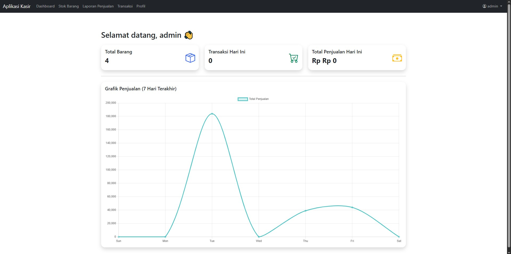

Proyek Saya
Berikut beberapa proyek yang pernah saya kerjakan secara pribadi.

🌦️ Aplikasi Cuaca
Menampilkan cuaca real-time dari OpenWeather API dengan UI responsif.
🔗 Lihat di GitHub


📂 E-Arsip
Sistem pengarsipan digital dengan fitur pencarian cepat dan upload dokumen.
🔗 Lihat di GitHub

🧾 E-Kasir
Sistem kasir berbasis web dengan laporan otomatis dan histori transaksi.
🔗 Lihat di GitHub